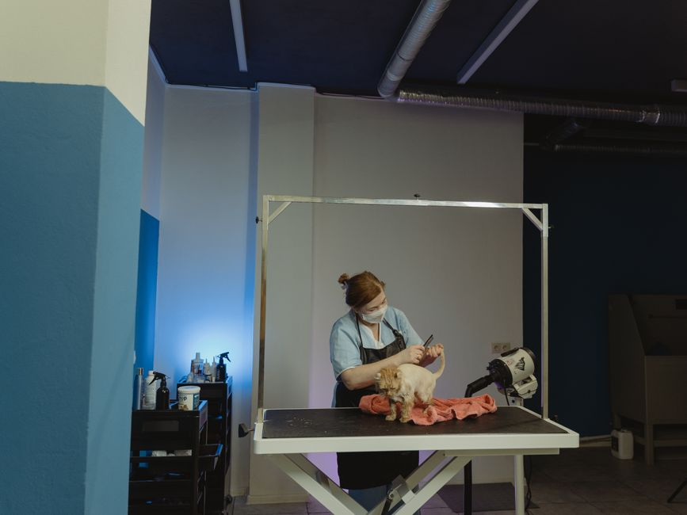
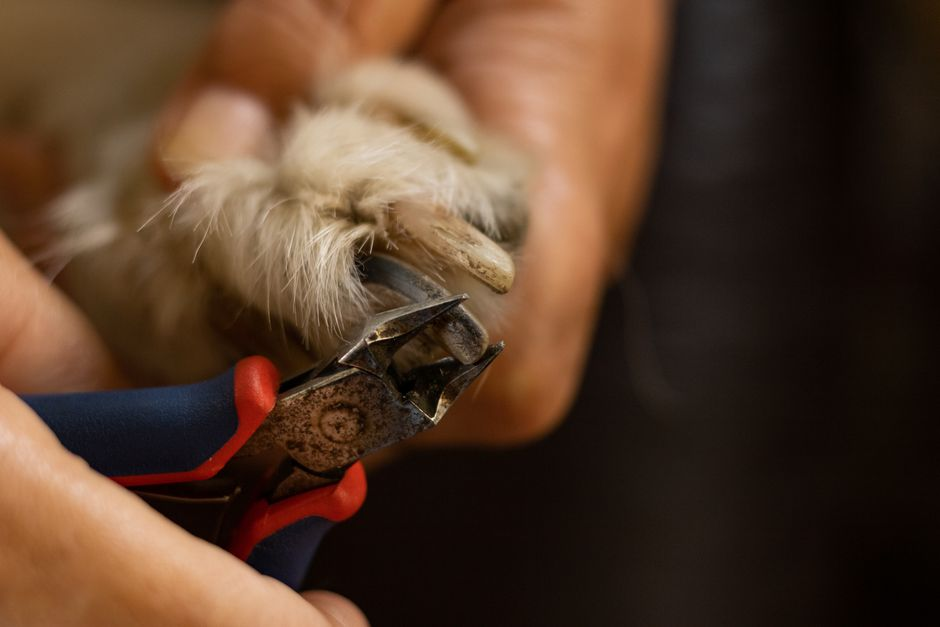

Essential Grooming Tips for Maintaining Your Pet's Beauty

Photo: Tima Miroshnichenko / Pexels
Taking care of your pet's appearance doesn't just make them look their best; it can also contribute to their overall health and well-being. Proper grooming is essential for many pets, from cats and dogs to birds and rabbits. Here are five practical grooming tips to help you maintain your pet’s beauty, keeping them clean, healthy, and looking their best.
1. Brushing Your Pet’s Fur Daily
For dogs and cats, brushing their fur is one of the most important grooming tasks. Aim to brush your pet at least once a day, or more frequently if their coat is long and thick. This helps remove loose hair, dirt, and tangles, preventing matting and promoting healthy skin. For instance, if your dog has a long coat, dedicate 10 to 15 minutes each day to gentle brushing. A slicker brush or a bristle brush can be used depending on your pet’s coat type. Regular brushing can also help identify any skin issues early on.
2. Bathing Your Pet Every 2 to 4 Weeks
While some pets, like dogs with short coats, can go longer between baths, most pets should be bathed every 2 to 4 weeks, or as needed. Over-bathing can strip the natural oils from your pet’s skin and coat, leading to dryness and irritation. Use a pet-safe shampoo and warm water, and make sure to rinse thoroughly. After bathing, dry your pet with a towel and allow them to air dry. For instance, if your cat is dirty from playing outside, bathe them once a month, but if they stay indoors, every two months might suffice.
3. Trimming Nails Every 4 to 8 Weeks

Photo: Mirko Fabian / Pexels
Keeping your pet’s nails trimmed is crucial to prevent them from becoming overgrown and causing discomfort or even injury. Use a pet-specific nail clipper and be cautious to avoid cutting the quick (the blood vessel inside the nail). Aim to trim your pet’s nails every 4 to 8 weeks. A quick snip can be done in just a few minutes. For example, if your dog has long nails, clip them every 8 weeks to keep them at the right length.
4. Ear Cleaning Every 1 to 2 Weeks
Dirty or infected ears can be uncomfortable for your pet and can lead to more serious health issues if left untreated. Check your pet’s ears for redness, odor, or discharge. Use a cotton ball and a pet-safe ear cleaner to gently clean the outer ear canal. Do this every 1 to 2 weeks, or as needed. For instance, if your dog has floppy ears that trap moisture, clean them weekly to prevent infection.
5. Teeth Brushing at Least Once a Week
Maintaining your pet’s dental hygiene is important for their overall health. Brush your pet’s teeth at least once a week using a pet toothbrush and toothpaste. You can start by dipping a finger in the toothpaste and letting your pet lick it off, then gradually introduce the toothbrush. A pet’s breath should be fresh, and regular brushing can help prevent gum disease and tooth decay. For example, if your cat is prone to dental issues, brush their teeth at least once a week to maintain good oral health.
By following these five grooming tips, you can help ensure your pet looks and feels their best. Remember, consistency is key in maintaining your pet’s beauty and health. Regular grooming can also strengthen the bond between you and your pet, making it a positive experience for both of you.
Recommended products
As an Amazon Associate, I earn from qualifying purchases.